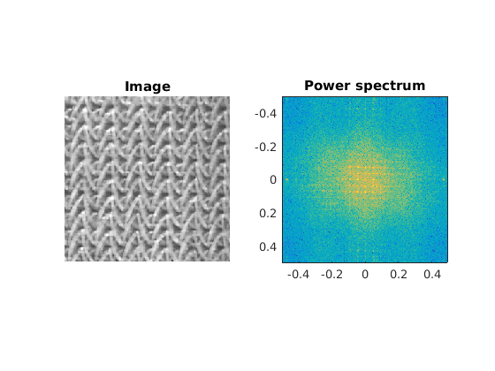

function [] = impowsp2()
img=imread('qcirchirp.bmp');
cameraman=imread('cameraman.tif');
soapbubble=imread('soapbubbles.png');
skin=imread('skin1.png');
texori=imread('tex_ori.png');
texscl= imread('tex_scl.png');
textill1=imread('textil1.png');
impowsp(cameraman,10,3,1,0,[2,10]);
impowsp(soapbubble,10,3,1,0,[2,10]);
impowsp(skin,10,3,1,0,[2,10]);
impowsp(texori,10,3,1,0,[2,10]);
impowsp(texscl,10,3,1,0,[2,10]);
impowsp(textill1,10,3,1,0,[2,10]);
function Pout = impowsp(Im,a,b,wtype,c,Fig)
[M,N] = size(Im);
L = max([M N]);
if L <= 256
K = 256;
elseif L <= 512
K = 512;
else
K = L;
end
I = double(Im);
A = I - mean(I(:))*ones(size(I));
switch wtype
case 1
w1 = kaiser(M,b); w2 = kaiser(N,b);
case 2
w1 = chebwin(M,b); w2 = chebwin(N,b);
otherwise
w1 = ones(M,1); w2 = ones(N,1);
end
W = w1*w2';
B = A.*W;
F = fft2(B,K,K);
F = fftshift(F);
P = F.*conj(F);
Pmax = max(P(:));
P = P/Pmax; Pout = P;
Figtype = Fig(1);
switch Figtype
case 0
disp('No Figure');
case 1
figno = Fig(2);
m0 = (K/2)+1-c; k = 2*c-1;
P(m0+(1:k),m0+(1:k)) = zeros(k);
B = log(ones(size(P))+a*Pmax*P);
y = linspace(-0.5,0.5-(1/K),K);
x = linspace(-0.5,0.5-(1/K),K);
figure(figno)
clf
imagesc(x,y,B);
axis([-0.5 0.5 -0.5 0.5]);
axis image
title('Power spectrum');
case 2
figno = Fig(2);
m0 = (K/2)+1-c; k = 2*c-1;
P(m0+(1:k),m0+(1:k)) = zeros(k);
C = log(ones(size(P))+a*Pmax*P);
y = linspace(-0.5,0.5-(1/K),K);
x = linspace(-0.5,0.5-(1/K),K);
figure(figno)
clf
subplot(1,2,1)
imshow(Im)
title('Image')
subplot(1,2,2)
imagesc(x,y,C);
axis([-0.5 0.5 -0.5 0.5]);
axis image
title('Power spectrum');
otherwise
disp('No such Figure, Fig(1) = 0, 1 or 2');
end
